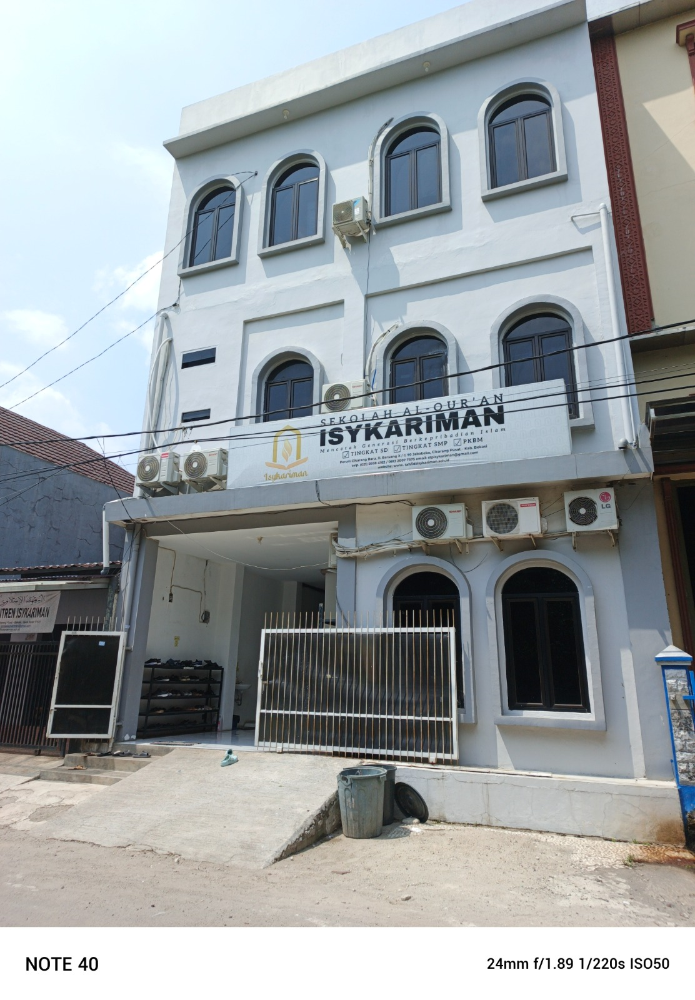

Menghubungkan kembali keluarga besar alumni, memperkuat silaturahmi dan kontribusi nyata.

Alumni
Angkatan
Prestasi
Pondok Pesantren Isykariman berkomitmen membentuk generasi yang berilmu, berakhlak, dan memiliki kontribusi nyata bagi masyarakat.
Membangun karakter dan keilmuan siswa.
Menjaga hubungan keluarga besar alumni.
Berkarya untuk umat dan bangsa.
Mari tetap terhubung bersama keluarga besar alumni.